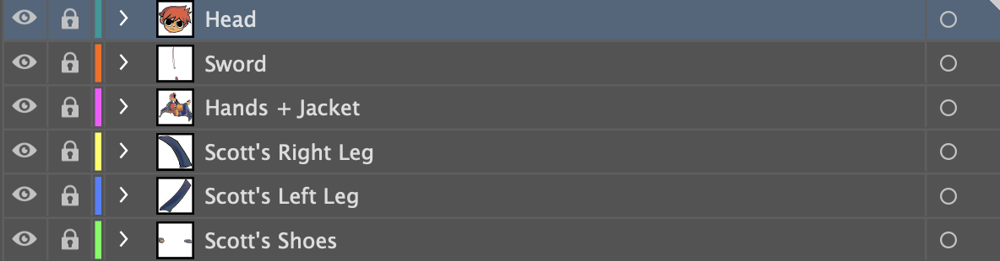

View more Projects
Adobe Illustrator Project

When we first were assigned this project, our first step was to pick a detailed, interesting cartoon character of our choosing to recreate within Adobe Illustrator. Our professor ideally wanted us to pick something that wasn’t too easy, but also not too difficult to trace. So I went ahead and chose to trace one of the covers from my favourite comic book series – Scott Pilgrim vs. The World (Vol. 6 Cover)
The cover of this volume consisted of six characters, and were all incredibly complex in detail within each character, going from the use of color, gradients, and various line widths. I knew this would be time consuming to do all six characters, but I also wanted to challenge myself.
First, I had to get my base down, and set up a template in order to trace with the pen tool. I had started with Scott, the main subject on this cover. Since he was the focus for this composition (and was the only character with their full body), I thought to split different elements of his character into different layers and named each layer to make it easier for myself later (head, sword, hands, right leg, left leg).
My thought process for tracing each element was to trace in black and white first, then color, then shadows and highlights after. Tracing each element with the pen tool was really fun! Working with the bezier curve arms and direct selection tool to trace over the line strokes made it feel like I was painting.
The main struggle that I encountered was with organizing the layers and playing around with the stacking order of the layers. But of course, naming my layers had definitely made it easier. Once I was done with Scott, It was time to move on to the background characters.
Each background character got their own layer, since they do not have many elements in comparison to Scott. After tracing all of the characters, It was time to fill in the colors with the eyedropper tool and gradient tool.
Our last steps were to recreate the headline (title) and background for our cartoon character. For the title, we had the choice of finding the typeface and adding an effect to it, or to just trace it. I went ahead and decided to trace it since the whole project was traced. As for the background, the radial gradient tool was used to recreate it.